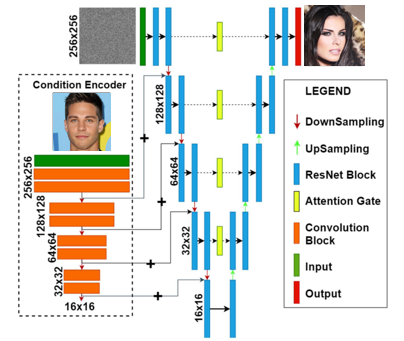
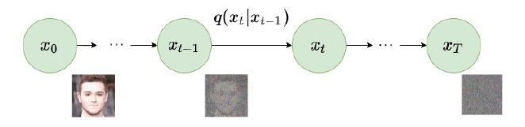
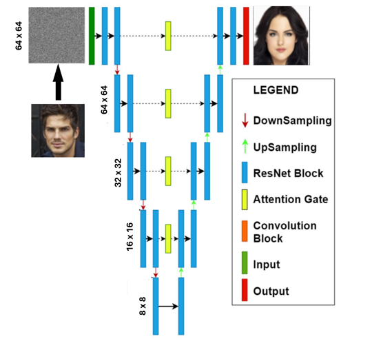
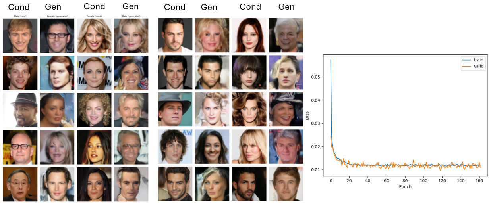
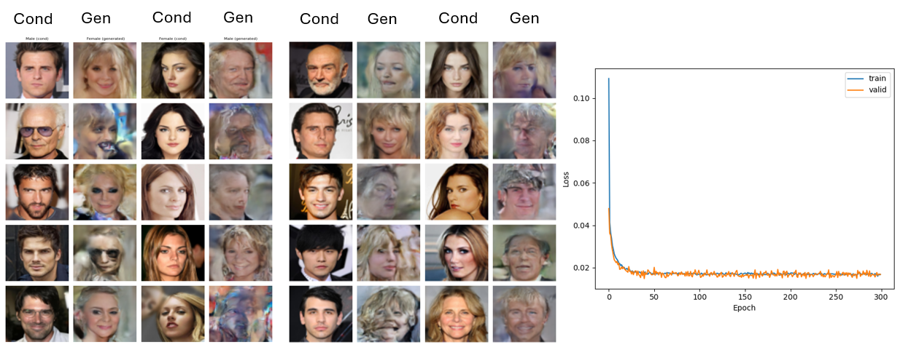
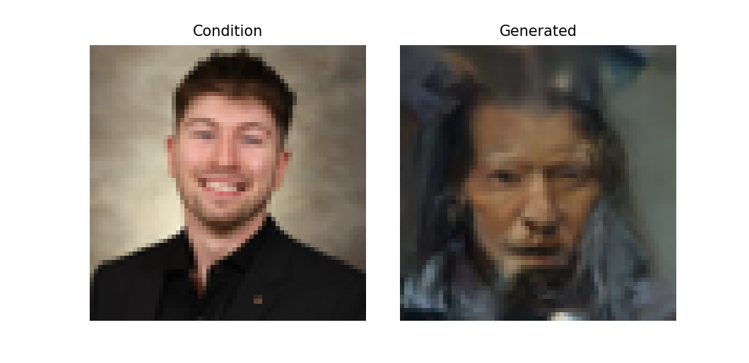

cDDPM for Facial Attribute Translation and Domain Conversion | GEI898
University of Sherbrooke
This project builds a conditional denoising diffusion probabilistic model (cDDPM) for domain-to-domain image translation. The primary task converts male portraits to female and female to male using the CelebA facial attribute dataset. A secondary experiment applies the same architecture to Day2Night landscape conversion.
A standard diffusion model generates images from noise with no external guidance. The conditional variant steers that generation toward a target domain using a reference image as input. The model must learn which visual attributes belong to the target domain, transfer them to the output, and do so without discarding the source content entirely.
Domain translation: source portrait and expected translated output.
The core model is a U-Net adapted for iterative denoising. Forward diffusion corrupts the input image by adding noise progressively over timesteps using a linear scheduler. At each timestep, the network receives the noisy image plus the conditioning signal and predicts the noise component added at that step. Repeating this prediction in reverse across all timesteps reconstructs a clean, domain-translated image.
The encoder compresses the noisy input into a compact feature representation by progressively reducing spatial resolution. Skip connections carry high-resolution detail forward to the decoder, preventing fine structure from disappearing in the bottleneck. The decoder rebuilds spatial resolution while using those skip connections to restore sharp boundaries and textures. Predicting noise rather than the clean image directly makes training more numerically stable, since the target is always a well-behaved Gaussian rather than a complex natural image distribution.

Global U-Net architecture: FiLM conditioning modules and attention layers at each depth.

Forward diffusion process: the linear scheduler progressively corrupts the image across timesteps.
Conditioning is applied through FiLM (Feature-wise Linear Modulation). A lightweight CNN encoder processes the condition image and outputs a compact latent vector. Two linear projections map that vector to a scale factor γ and a shift factor β. These two parameters modulate every intermediate feature map inside the U-Net ResNet blocks: FiLM(x) = γ ⊙ x + β.
FiLM applied at every residual block means the conditioning signal reaches both shallow layers, where texture and local structure live, and deep layers, where high-level semantic attributes are represented. Injecting only at the input would lose influence over deep features entirely.
Think of it this way: the conditioning image sends two instructions to every layer of the network. One says "scale up these features, scale down those." The other says "shift everything by this amount." Those instructions are different at every layer because the condition encoder produces a single latent vector that gets projected to layer-specific γ and β pairs. The network learns which features to amplify at each depth to best perform the requested domain shift.
FiLM modulation inside the ResNet block: γ scales and β shifts each feature map channel-wise.
Attention is not applied uniformly across the network. Each location in the U-Net has a different representational role, and the type of attention placed there was chosen to match that role. The table below summarizes what each attention type contributes at each network location.
| Attention Type | U-Net Feature Maps | Skip Connections | Latent Space (Bottleneck) |
|---|---|---|---|
| No Attention | N/A | Direct concatenation only — no filtering | N/A |
| Linear Self-Attention | Ensures spatial coherence of features modulated by the timestep embedding | Encoder features are refined before being forwarded to the decoder | N/A |
| Cross-Attention | Selects relevant information from the condition at each position, based on the current noise level | The decoder selectively filters which encoder features are actually useful for reconstruction | N/A |
| Full Self-Attention | N/A | N/A | Global coherence at the most compressed point — every position attends to every other |
Think of it as three specialized filters placed at three key checkpoints: one that keeps the feature maps internally consistent while denoising, one that decides which encoder context the decoder should trust, and one that ensures the final compressed representation is globally coherent before reconstruction begins.
Three design decisions drove the performance differences across experiment configurations: whether training pairs source and target images explicitly, how the condition enters the network, and whether guidance is applied at inference.
Paired training presents explicit male-female image correspondences at each update step, giving the model a direct signal for what "correct" translation looks like. Unpaired training provides no explicit correspondence. The model learns the translation from population-level statistics across source and target domains. Paired training produces stronger attribute alignment but requires a dataset of matched pairs, which is harder to curate at scale.

Input concatenation baseline: the condition is appended as extra channels at the network input, limiting its influence to early layers only.
Two injection strategies were evaluated. Condition Encoding (FiLM) adds the modulated latent representation inside each ResNet block. Input Concatenation appends the condition image as additional channels at the network input. FiLM propagates the condition signal through all network depths. Concatenation limits influence to early processing stages.
| Configuration | Injection Method | Data Pairing | Conditioning Reach |
|---|---|---|---|
| Baseline | Input Concatenation | Unpaired | Input layer only |
| FiLM (Unpaired) | Condition Encoding (FiLM) | Unpaired | All ResNet blocks |
| FiLM + Paired + CFG | Condition Encoding (FiLM) | Paired | All ResNet blocks + guided inference |
Without Classifier-Free Guidance, the condition can over-constrain the denoising process, pulling outputs toward a mode that satisfies the condition but deviates from a natural image distribution. CFG addresses this by randomly dropping the condition during training with a probability of 20%. The model learns to generate under both conditioned and unconditioned paths.
At inference time, predictions from the conditioned and unconditioned passes are interpolated. This interpolation controls how strongly the condition steers the output. A high guidance weight prioritizes attribute transfer. A low weight prioritizes image naturalness. The 20% training dropout keeps both modes well-calibrated.
Generated outputs show successful transfer of gender-linked attributes including hair length, facial structure, and apparent makeup. Source identity is not consistently preserved. The conditioning signal transfers target-domain attributes but provides no explicit anchor for source-specific structure, which allows identity drift.
Adding a face recognition loss would constrain structural drift directly. Without it, extending training is unlikely to resolve the issue since the model receives no gradient signal penalizing identity change. FiLM's multi-depth injection is the design choice that produced attribute transfer quality at the level shown here — input concatenation alone would not have reached it.

Generated samples and training loss curve for the paired image configuration.

Generated samples and training loss curve for the unpaired image configuration.
Multi-depth FiLM injection produces stronger attribute transfer than input concatenation alone. A condition injected only at the input loses influence over deep layers where high-level semantic attributes such as facial structure and expression are represented. FiLM's reach across all ResNet blocks closes that gap by modulating both local texture features and global semantic features simultaneously. The KID difference between configurations reflects this directly: translation quality scales with how deeply the condition penetrates the network.
The cDDPM trained for 54 epochs was benchmarked against a standard GAN baseline on Day2Night landscape conversion. This comparison tests whether diffusion-based generation is competitive against the established adversarial approach on a structurally simpler domain shift.
| Model | Training Paradigm | Conditioning | Task |
|---|---|---|---|
| cDDPM (54 epochs) | Diffusion, iterative denoising | FiLM + CFG | Day2Night |
| GAN (Baseline) | Adversarial, generator-discriminator | Standard conditional | Day2Night |
Diffusion models produce high-fidelity outputs but require significantly more compute at inference time than GANs. The GAN baseline reaches stable coherence faster on low-complexity domain shifts where the target distribution is narrow and well-defined, which makes Day2Night a competitive benchmark for it. The 54-epoch cDDPM result establishes how much training budget this architecture requires to reach comparable coherence. On more complex tasks where the target domain is semantically richer, the diffusion model's iterative refinement advantage over adversarial training would be more pronounced.

Left: condition (source portrait). Right: the model's generated output.
The model was tested on a personal portrait. The objective was simple: take a real photo of the author and translate it into a female version that preserves the original features. What it produced instead could generously be described as abstract.
The output keeps a rough facial geometry. Everything else collapses: skin tone drifts, expression dissolves, the background merges with the foreground, and the overall result looks less like a translated portrait and more like a late-night encounter in a haunted house. The model did not turn the author into a woman. It turned him into a demon.
This result is not an edge case. It is a precise illustration of the core limitation: the condition injection mechanism steers the domain but provides no structural anchor for source identity. The model knows what female faces look like. It does not know how to make this specific face look female. That gap is exactly what refined spatial conditioning and an identity loss are designed to close in future work.
This project demonstrates a functional cDDPM pipeline for image-to-image translation using FiLM conditioning, Classifier-Free Guidance, and paired training. The model transfers gender-linked facial attributes on CelebA and produces directional domain shifts on Day2Night. The conditioning signal was not fully optimized in this iteration: guidance from the condition image sometimes interferes with the denoising process rather than steering it cleanly.
Example where the condition failed to redirect the denoising trajectory toward the target domain.
Future direction: placeholder-based spatial conditioning that reserves feature map areas for targeted semantic attribute injection.